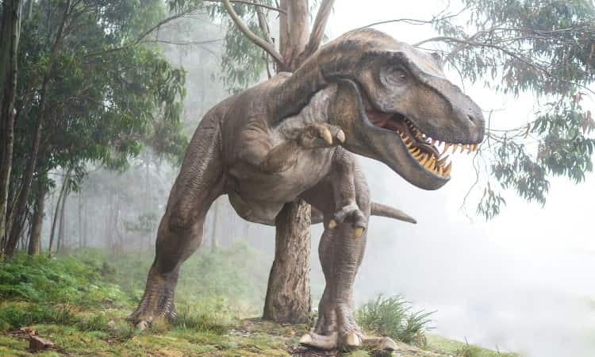
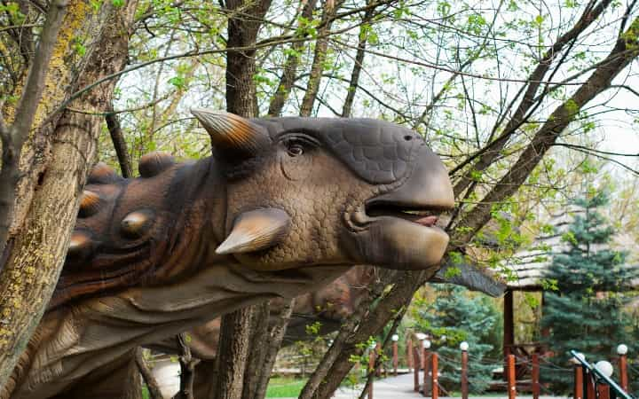
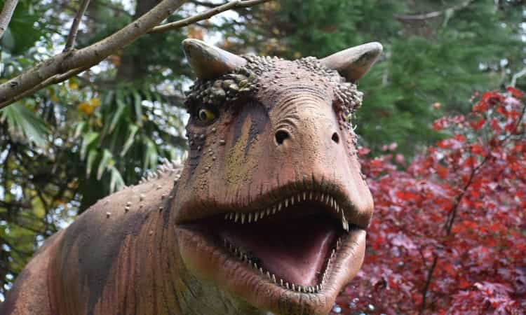
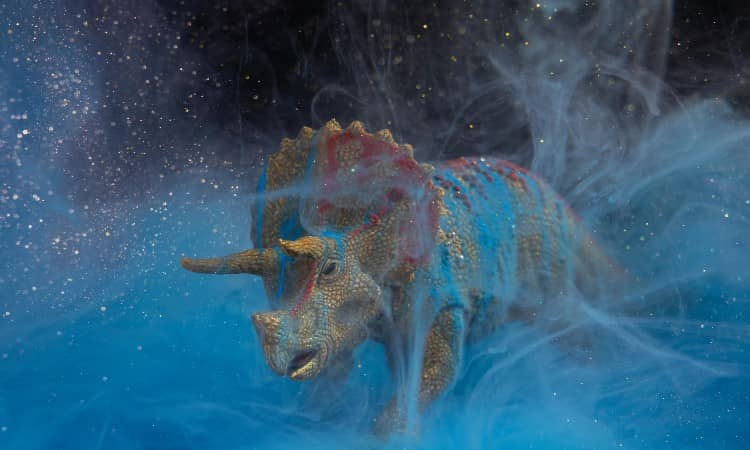
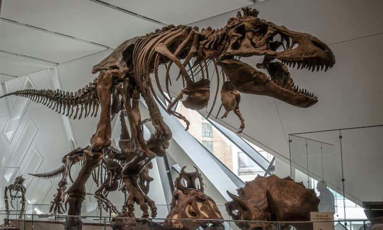
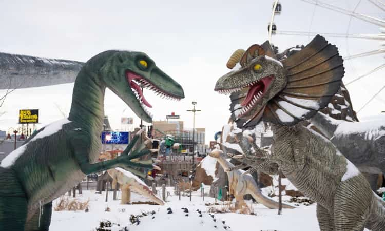

El T-Rex fue un depredador gigante de hasta 12 metros, con mandíbulas poderosas y una mordida letal. Dominaba su entorno y, aunque cazaba, también podría haber sido carroñero.
Rex

El Ankylosaurus estaba cubierto de placas óseas y tenía una cola en forma de maza para defenderse. Era un herbívoro acorazado, resistente a los depredadores gracias a su armadura natural.
Ankylosaurio

El Carnotaurus era un carnívoro ágil, caracterizado por cuernos en su cabeza y brazos extremadamente cortos. Se destacaba por embestir a sus presas con su poderoso cráneo.
Carno

El Triceratops tenía tres cuernos y un volante óseo que lo protegía de los depredadores. Participaba en peleas con otros machos por territorio o parejas.
Triceratops

Los fósiles de dinosaurios nos revelan detalles sobre su apariencia y comportamiento, conservando huesos, huellas y a veces impresiones de piel. Son la clave para entender la vida prehistórica.
Fosiles

Las peleas territoriales eran comunes entre dinosaurios, con herbívoros como Triceratops usando cuernos y carnívoros como Carnotaurus luchando por territorio y recursos.